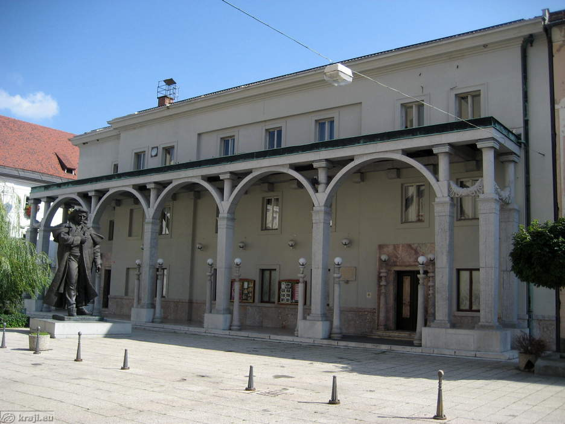
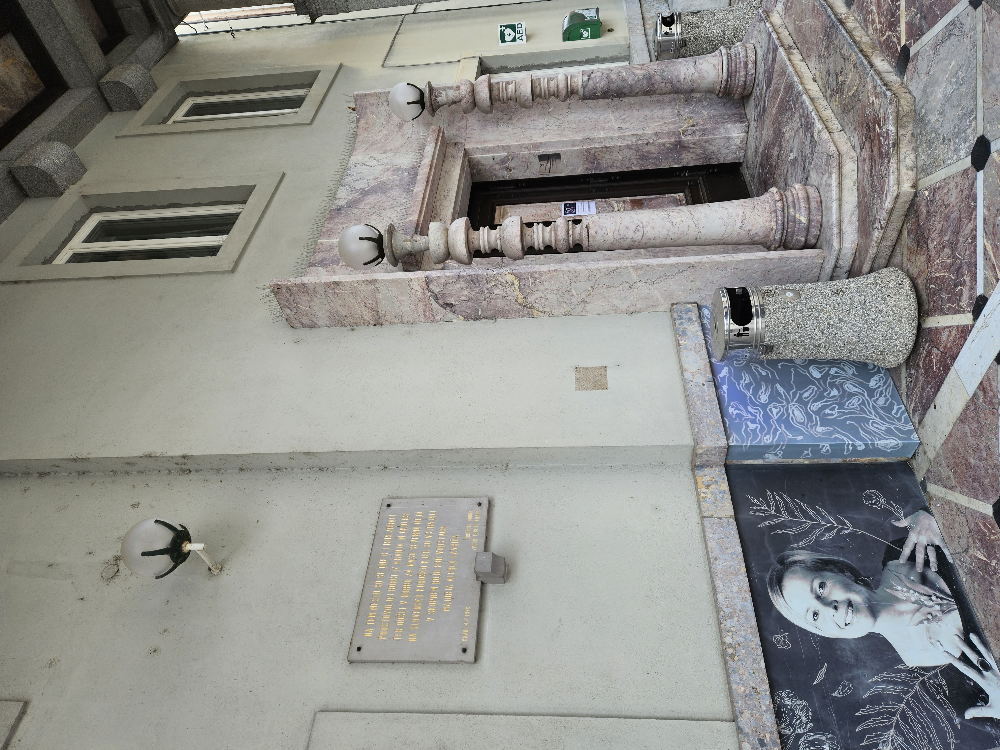
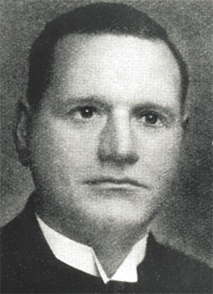
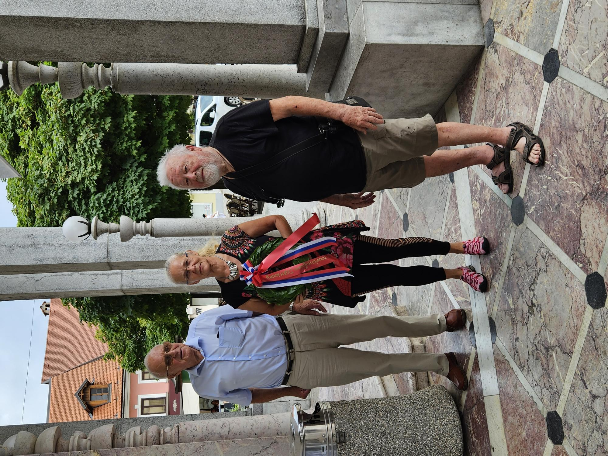
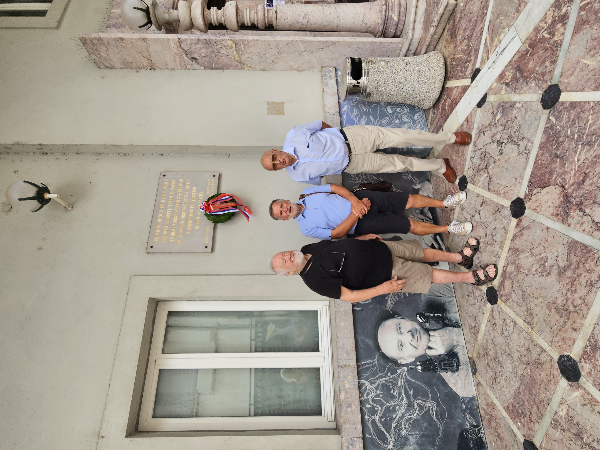
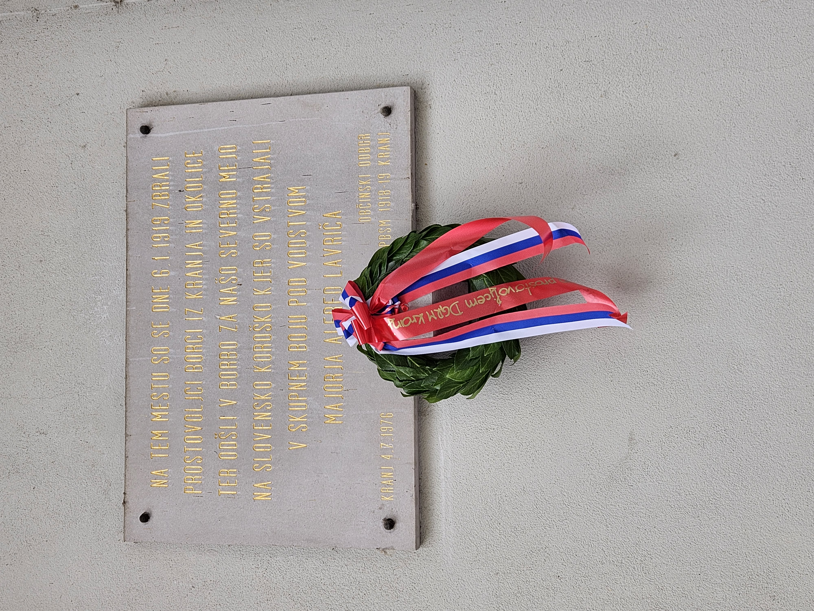

Položitev lovorovega venca na spominsko ploščo na Prešernovem gledališču 27. 6. 2023
4. julija 1976 je Občinski odbor Zveze prostovoljcev borcev za severno mejo v spomin na prostovoljce - borce iz Kranja in okolice ter majorja Alfreda Lavriča ob vhodu v Prešernovo gledališče v Kranju odkril spominsko ploščo z napisom:
NA TEM MESTU SO SE DNE 6. 1. 1919 ZBRALI
PROSTOVOLJCI BORCI IZ KRANJA IN OKOLICE
TER ODŠLI V BORBO ZA NAŠO SEVERNO MEJO
NA SLOVENSKO KOROŠKO KJER SO VSTRAJALI
V SKUPNEM BOJU POD VODSTVOM
MAJORJA ALFRED LAVRIČA
OBČINSKI ODBOR
KRANJ 4. 7. 1976 ZPBSM 1918-19 KRANJ

Kot memorialna dediščina je spominska plošča vpisana v dokument »Nepremična kulturna dediščina Mestna občina Kranj« in v dokument ZVKDS OE Kranj »Strokovne zasnove varstva kulturne dediščine za območje Mestne občine Kranj«.
V programu DGRM Kranj za letošnje leto smo načrtovali, da bomo spominsko ploščo očistili in obnovili. Po razgovoru na ZVKDS OE Kranj smo ugotovili, da je lastnik stavbe in plošče MO Kranj, sama spominska plošča pa predstavlja nepremično memorialno kulturno dediščino. Za vsak poseg je potrebno predhodno pridobiti od ZVKDS tudi kulturno varstveno soglasje in kulturno varstvene pogoje ter soglasji upravljavca in lastnika. Za spominsko ploščo mora skrbeti predvsem lastnik, zato smo se načrtovani obnovitvi odpovedali.

Že dolgo na ploščo ni bil položen venec. Zanjo večina do nedavnega niti nismo vedeli ali pa smo jo ob vstopanju v gledališče na predstave spregledali.
Nekaj besed o majorju Alfredu Lavriču:
»Rojen je bil 27. junija 1898 v dalmatinskem Gružu , umrl pa je 21. junija 1933 v Mariboru.

V Dunajskem Novem mestu je končal vojaško akademijo in leta 1912 vojno šolo na Dunaju. Služboval je v 41. pehotnem polku v Černovicah na Češkem in v štabu 18. pehotne brigade v Pragi. V prvi svetovni vojni je bil poveljnik bataljona v pretežno slovenskem 17. pehotnem polku. Alfred Lavrič se je po razpadu monarhije pridružil slovenski vojski, čeprav v nekaterih zapisih o njem trdijo, da slovensko ni govoril prav dobro, ker je bil šolan na tujem.
- novembra 1918 je bil imenovan za poveljnika na Koroškem. Dodelili so mu vojaški okraj od Podkloštra do Borovelj. Ker je bila tedaj slovenska vojska še neorganizirana, je moral sam poskrbeti za mobilizacijo. Dne 19. novembra 1918 je z vojsko vkorakal v Borovlje. Do konca novembra je bilo v Borovljah 200 slovenskih vojakov, 9 strojnic in en top. Za zasluge na Koroškem je bil povišan v majorja. V bojih z Avstrijci je bil 7. januarja 1919 hudo ranjen in ujet. O bojih na Koroškem je napisal spomine. Postal je težak invalid in paraliziran, zato je zapustil vojaško službo.
V njegovem nekrologu leta 1935 v glasilu Slovenija je zapisano, da je »životaril kot trgovski pomočnik,« a je bil »človek resnične kulture, tih in skromen«. Že tedaj so tudi zapisali, da je bil nekoliko pozabljen, tako kot zdaj, čeprav je Alfred Lavrič poleg Franja Malgaja in Rudolfa Maistra najbolj slaven borec za severno mejo.«
V skladu s programom je delegacija DGRM Kranj, ki so jo sestavljali predsednik Roman Nahtigal ter starosta društva mag. Štefan Kadoič, Nada Bogataj Kržan in Jože Zabret ob 140. letnici rojstva Alfreda Lavriča in v spomin na prostovoljce - borce za severno mejo iz Kranja in okolice na spominsko ploščo položila lovorov venec z napisom:
ALFREDU LAVRIČU IN PROSTOVOLJCEM DGRM KRANJ.


